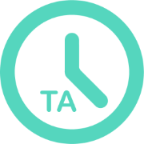

Time
Align
Time Align keeps track of your tasks, records how long they
take, and lets you know when you’re running out of time to
complete them. It lets you organize your life while giving you
the information needed to make it more efficient.
Start Now!